<div class="ui inverted black menu">
    <div class="ui container">
        <div>
            <a href="{% url 'blog:index' %}">
        </div></a>
        <div class="right menu">
            <a class="item">
                <i class="home icon"></i> 主页
            </a>
            <a class="item">
                <i class="grid layout icon"></i> 浏览
            </a>
            <a class="item">
                <i class="mail icon"></i> 信息
            </a>
        </div>
    </div>
</div>